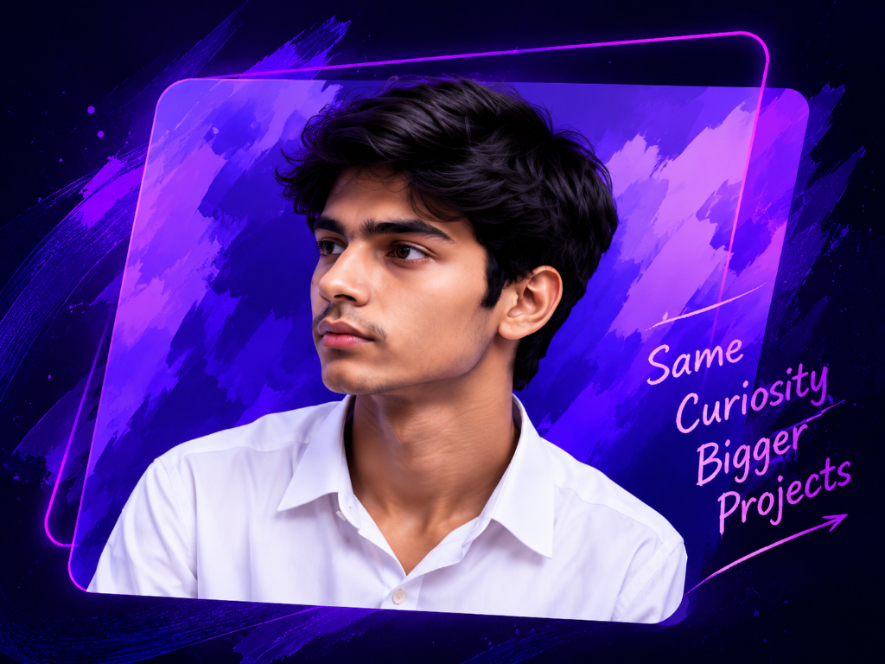

Web Development
Building responsive and modern web applications using modern technologies.

SameMY STORY
I’m Krishna Dutt, a Computer Science student who has always been curious about how things work. From a simple interest in technology to building real projects, my journey has been all about learning, experimenting and improving every day.
Explored programming and problem solving.
Worked on web development and learned new technologies.
Currently learning and building bigger projects.
WHAT I DO
I love working on real-world projects, learning new tools and solving meaningful problems. Here are some of the areas I focus on:
Building responsive and modern web applications using modern technologies.
I enjoy solving coding problems and improving my logical thinking.
Always curious to explore new technologies and expand my skill set.
Turning ideas into useful and interactive real-world applications.
EDUCATION
Currently pursuing B.Tech CSE and continuously learning new concepts in programming, data structures, web development and more.
INTERESTS
GOALS